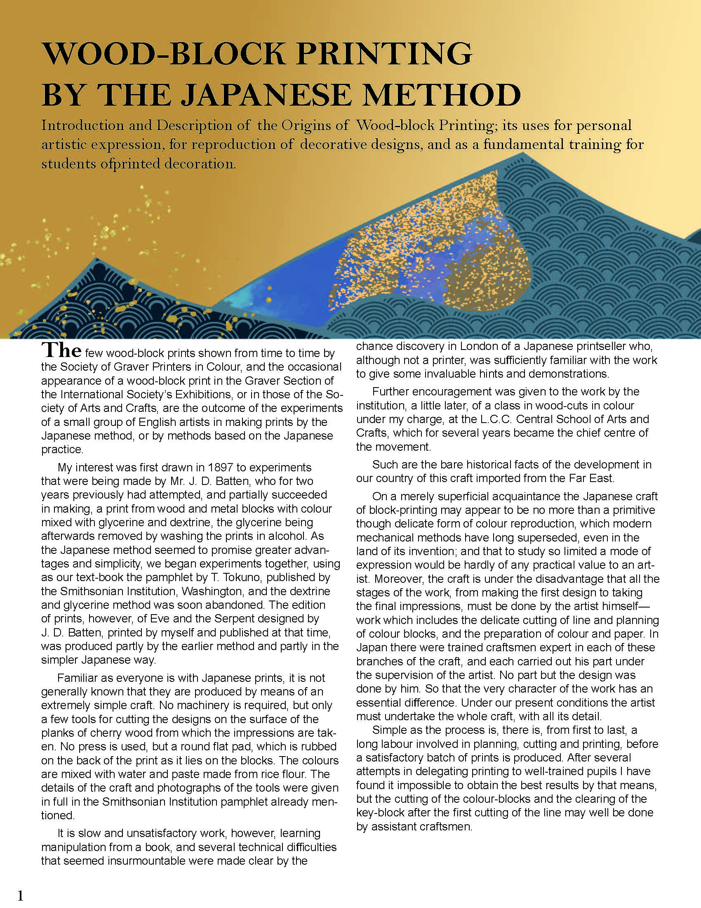
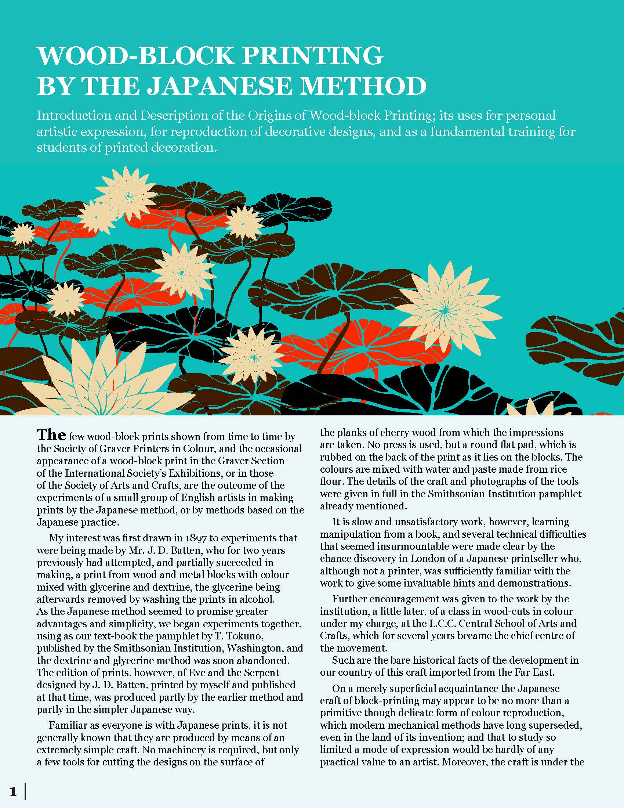
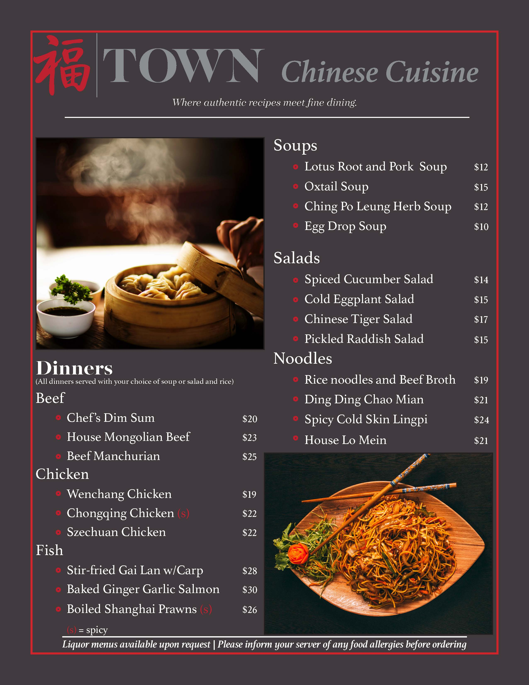

Hello, I am Camdyn Bacon, a designer based out of New Hampshire. Currently working as a freelance designer, my specialties include utilizing the Adobe Creative Suite, creating design solutions for individuals / small businesses, and producing effective brand identities and marketing material.

Typographic Design #1
The first work of two typographic designs created to show an understanding of typography, print layout design, and industry standard software such as Adobe InDesign.

Typographic Design #2
The second work of two typographic designs created to show an understanding of typography, print layout design, and industry standard software such as Adobe InDesign.

UX Design #1
One of three designs created for TOWN Restaurant, this work is a branded menu meant to visually represent the TOWN brand.